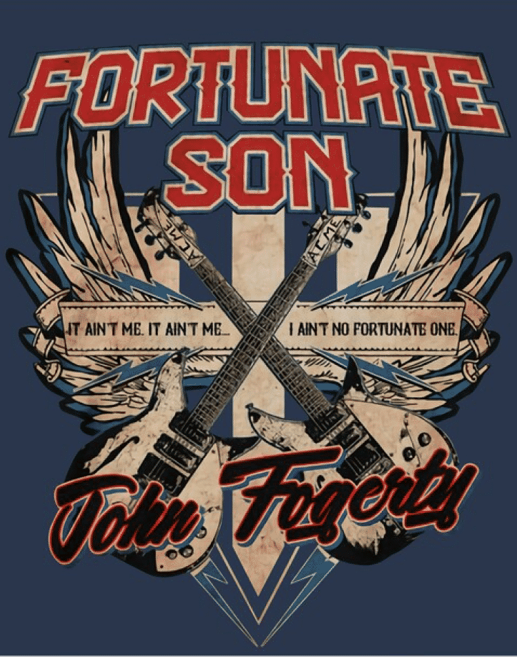

Fortunate Son
"Fortunate Son" : L'Hymne Anti-Guerre de John Fogerty
Sorti en 1969 au cœur de la tourmente de la Guerre du Vietnam, "Fortunate Son" de John Fogerty et Creedence Clearwater Revival s'est imposé comme un puissant hymne de protestation. Les paroles incisives et la mélodie enlevée ont touché une génération cherchant à comprendre les complexités et les inégalités du conflit.
Fogerty & le groupe
John Fogerty et Creedence Clearwater Revival : Voix Protestataires de la Guerre du Vietnam
Voir L’articleL'opposition farouche de Fogerty à l'inégalité
En tant que chanteur principal et auteur-compositeur de Creedence Clearwater Revival, John Fogerty a composé "Fortunate Son" en réponse directe au climat socio-politique de l'époque. La chanson aborde de front la nette séparation entre les privilégiés et les moins fortunés dans le contexte de la conscription pour la Guerre du Vietnam.
Un cri d'indignation
Avec des vers tels que "Ce n'est pas moi, ce n'est pas moi, je ne suis pas le fils d'un sénateur," Fogerty réprimande avec virulence un système où les nantis pouvaient éviter le service militaire, tandis que ceux issus de milieux modestes étaient disproportionnellement enrôlés. Le refrain devient un cri de ralliement, exprimant un sentiment collectif d'indignation et soulignant l'injustice flagrante.
La position anti-guerre de Fogerty
John Fogerty a toujours adopté une position farouche contre la guerre du Vietnam. Il la considérait comme une entreprise égarée et dévastatrice qui touchait de manière disproportionnée les travailleurs américains. À travers "Fortunate Son", il a canalisé sa dissidence en un témoignage musical, capturant l'esprit d'une génération.
Une pertinence intemporelle d'un hymne de protestation
"Fortunate Son" perdure non seulement pour sa signification historique, mais aussi pour sa condamnation universelle des injustices sociales et économiques perpétrées par la guerre. Au-delà de son contexte initial, la chanson transcende le temps et les frontières, demeurant un rappel poignant de la nécessité de questionner l'autorité et de lutter pour la justice.
Un tir de barrage musical pour la critique sociale
"Fortunate Son" est un témoignage de la puissance de la musique en tant que véhicule de critique sociale et de protestation. La censure inflexible de Fogerty envers la Guerre du Vietnam et les disparités sociales qu'elle mettait en lumière consolide la place de la chanson dans l'histoire de la musique.
Un appel intemporel à la responsabilité
Dans un monde encore marqué par les conflits et les inégalités, "Fortunate Son" demeure un appel intemporel à la responsabilité et à l'empathie. Son message résonne comme un rappel puissant que les conséquences de la guerre vont bien au-delà du champ de bataille, laissant une empreinte indélébile sur les individus et les communautés.